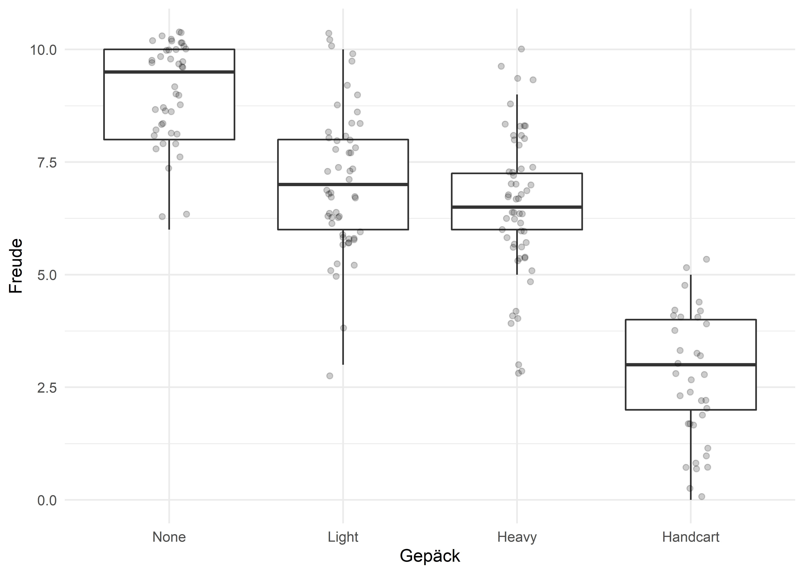

Eine ANOVA ist ein Omnibus-Test, d.h., dass uns ein signifikanter \(F\)-Wert erstmal nur sagt, dass sich die Gruppenmittelwerte (die Mittelwerte der unterschiedlichen Faktorstufen) voneinander unterscheiden. Wir wissen aber noch nicht wo. Im Grunde ist ein signifikantes Ergebnis einer ANOVA eine Aufforderung dazu, weitere Untersuchungen anzustellen. An dieser Stelle hat man nun zwei Möglichkeiten; entweder man hat bereits eine Hypohese oder Ahnung, wo die Unterschiede liegen könnten. In diesem Fall kann man vorab Kontrase (also geplante Kontraste) definieren und diese Unterschiede prüfen. Hat man keine Hypothesen und will “sich überraschen lassen”, macht man einen Post-hoc-Test.
Die Grundidee von Kontrasten ist, die Varianz, die durch unsere Faktoren erklärt wird, weiter aufzuschlüsseln. Die ANOVA an sich hat die Gesamtvarianz der Daten in eine Modell-Varianz und eine Residual-Varianz zerlegt, also Anteile der Streuung, die durch unser Modell (unsere Faktoren) erklärt werden kann und jene die übrig bleibt. Diese Modell-Varianz können wir nun weiter “aufsplitten”, bzw. weiter untersuchen. Am besten stellt man sich das wie einen Kuchen vor: Wir haben bereits ein Stück vom Kuchen abgeschnitten (die Residual-Varianz) und haben einen großen Teil vom Kuchen übrig. Wir wissen nun, dass irgendwo in diesem übrig gebliebenen Kuchen ein Unterschied steckt, den wir weiter aufklären wollen. Dazu teilen wir diesen Rest in weitere Teile und vergleichen diese miteinander.
Man darf natürlich nicht wild drauf los raten und irgendwelche Gruppen miteinander vergleichen; das Vorgehen muss eine gewisse Struktur haben, damit sinnvolle – und vor allem interpretierbare – Berechnungen durchgeführt werden. Um ein Stück vom Kuchen (s.o.) mit einem anderen Stück zu vergleichen, nutzt man Gewichte, die wir gleich näher erläutern. Außerdem muss man, wenn man \(k\) Gruppen miteinander vergleicht, \(k-1\) Kontraste definieren. Field (2018) hat zur Definition von Kontrasten fünf Regeln aufgestellt, an die man sich halten sollte:
Deutlich wird das, wenn wir uns dazu ein Beispiel anschauen.
Für das Beispiel der einfaktoriellen ANOVA hatten wir uns einen fiktiven Datensatz zu Besuchern des Phantasialandes angeschaut. In diesem Datensatz finden wir die empfundene Freude von 186 Besuchern des Phantasialandes (Variable joy), eingeteilt in Gruppen von Handgepäck-Typ. Wir haben Besucher ohne Handgepäck, mit leichtem und schwerem Rucksack und jenen, die einen Bollerwagen ziehen müssen. Mit der einfaktoriellen ANOVA haben wir bereits herausgefunden, dass sich diese Gruppen hinsichtlich ihrer Freude signifikant unterscheiden.
## # A tibble: 186 x 3
## id backpack joy
## <chr> <fct> <dbl>
## 1 1 Light 5
## 2 2 Light 7
## 3 3 Handcart 3
## 4 4 Heavy 6
## 5 5 Heavy 3
## 6 6 Heavy 6
## 7 7 Handcart 4
## 8 8 None 10
## 9 9 None 9
## 10 10 Handcart 5
## # ... with 176 more rows# Boxplot
phantasialand %>%
ggplot(aes(x = backpack, y = joy)) +
geom_boxplot(outlier.color = NA) +
geom_jitter(width = 0.1, alpha = 0.2) +
labs(x = "Gepäck", y = "Freude")
## ANOVA Table (type II tests)
##
## Effect DFn DFd F p p<.05 ges
## 1 backpack 3 182 126.164 3.14e-44 * 0.675Nun interressieren wir uns dafür, wo die Unterschiede sind. Wir müssen \(k-1\) Kontraste definieren – und dann noch anhand der oben dargestellten Regeln. Zuerst haben wir hier \(k = 4\) Gruppen, also müssen wir \(4-1 = 3\) Kontraste definieren. Wir dürfen immer nur zwei Stücke vom Kuchen miteinander vergleichen Als erstes könnte uns bspw. interessieren, ob sich die Gruppe derer ohne Handgepäck (die glücklichsten) von allen anderen Gruppen unterscheidet. Die Gewichte würden dann so verteilt werden:
| Gruppe | Kontrast 1 |
|---|---|
| None | -3 |
| Light | 1 |
| Heavy | 1 |
| Handcart | 1 |
| Summe | 0 |
Für diesen ersten Kontrast sind alle Regeln erfüllt. Wir vergleichen nur zwei Stücke miteinander (“None” und alle anderen; Regel 1), was wir durch ein negatives und drei positive Gewichte kenntlich gemacht haben (Regel 2). Die Summe der Gewichte ist 0 (\(-3 + 1 + 1 + 1 = 0\); Regel 3) und Regel 5 ist auch erfüllt: Das negative Gewicht, das wir der Gruppe “None” zugewisen haben entspricht der Anzahl der Gruppen im Stück mit den positiven Gewichten (3). Auch die Gewichte im Stück mit den positiven Gewichten (jeweils 1) entsprechen der Anzahl der Gruppen im Stück mit den negativen Regressionsgewichten (hier nur die Gruppe “None”, also eine Gruppe). In diesem Kontrast werden alle Gruppen einbezogen, also findet Regel 4 noch keine Anwendung.
Machen wir uns an die übrigen Kontraste. Im nächsten Schritt würden wir vergleichen, ob sich die Gruppe dere mit leichtem Handgepäck von jenen unterscheidet, die schweres Handgepäck tragen oder einen Bollerwagen ziehen müssen.
| Gruppe | Kontrast 1 | Kontrast 2 |
|---|---|---|
| None | -3 | 0 |
| Light | 1 | -2 |
| Heavy | 1 | 1 |
| Handcart | 1 | 1 |
| Summe | 0 | 0 |
Hier sind wieder alle Regeln erfüllt; sogar Regel 4, indem die Gruppe “None” ein Gewicht von 0 abbekommen hat. Wir haben diese Gruppe als solche nämlich bereits in Kontrast 1 genutzt, also sollten wie sie nun nicht mehr verwenden (Regel 1). Der letzte Kontrast vergleicht jene mit schwerem Handgepäck mit denen, die einen Bollerwagen ziehen.
| Gruppe | Kontrast 1 | Kontrast 2 | Kontrast 3 |
|---|---|---|---|
| None | -3 | 0 | 0 |
| Light | 1 | -2 | 0 |
| Heavy | 1 | 1 | -1 |
| Handcart | 1 | 1 | 1 |
| Summe | 0 | 0 | 0 |
Und so einfach haben wir die drei Kontraste definiert. Wenn wir Kontraste so definieren, haben wir orthogonale (oder unabhängige) Kontraste, die die Interpretation erleichtern. Ob Kontraste orthogonal oder unabhängig sind, kann man auch wieder errechnen, indem man die Produkte der Kontrast-Gewichte addiert; kommt am Ende 0 bei raus, sind sie orthogonal.
| Gruppe | Kontrast 1 | Kontrast 2 | Kontrast 3 | Produkt |
|---|---|---|---|---|
| None | -3 | 0 | 0 | 0 |
| Light | 1 | -2 | 0 | 0 |
| Heavy | 1 | 1 | -1 | -1 |
| Handcart | 1 | 1 | 1 | 1 |
| Summe | 0 | 0 | 0 | 0 |
Nicht orthogonale Kontrast an für sich sind nicht falsch, man sollte bei der Interpretation nur sehr vorsichtig sein, weil die Vergleiche nicht mehr unabhängig sind und die \(p\)-Werte der Kontraste miteinander korrelieren könnten (und alleine diese Aussage sollte bei jedem Leser einen Schwall von Unbehagen auslösen).
Unsere Kontraste können wir nun manuell definieren. Vorher sollten wir uns aber die Reihenfolge der Faktorlevels anschauen, nur um sicherzugehen, dass wir den Gruppen die richtigen Gewichte geben.
## [1] "None" "Light" "Heavy" "Handcart"Die Reihenfolge ist wie gedacht, also können wir auch die Kontraste wie in der obigen Tabelle definieren.
contrast_1 <- c(-3, 1, 1, 1)
contrast_2 <- c(0, -2, 1, 1)
contrast_3 <- c(0, 0, -1, 1)
my_contrasts <- cbind(contrast_1, contrast_2, contrast_3)
contrasts(phantasialand$backpack) <- my_contrasts
phantasialand %>% pull(backpack)## [1] Light Light Handcart Heavy Heavy Heavy Handcart None
## [9] None Handcart None None None None Handcart None
## [17] Light None Light Heavy Heavy None Heavy Heavy
## [25] Light Light Handcart Handcart None Light Handcart Light
## [33] None Light None Heavy Heavy Heavy Handcart Handcart
## [41] Light Light Light None None None None Heavy
## [49] Handcart Handcart None Heavy Heavy Light Heavy Heavy
## [57] Heavy None Light Heavy Heavy Heavy Light Handcart
## [65] Heavy Heavy Heavy Light Light None Heavy Light
## [73] Handcart Heavy Heavy Light None None Light Handcart
## [81] Heavy Light Heavy None Heavy None Light Handcart
## [89] Heavy Handcart Heavy Heavy None Heavy Light Light
## [97] Light Light Handcart None Handcart None Handcart Handcart
## [105] Light None Handcart Heavy Heavy None None Handcart
## [113] Heavy Light None Handcart Handcart Heavy Light Heavy
## [121] Heavy Light Heavy None Handcart Light Light Light
## [129] Heavy Light Light Light Handcart Handcart Handcart Light
## [137] Handcart Heavy None None Heavy None Light Heavy
## [145] None Heavy None Heavy Handcart Handcart Handcart Handcart
## [153] Light Light Heavy Light Heavy Light Light Heavy
## [161] None Heavy Heavy None Light None Light Heavy
## [169] Heavy None Light Handcart Light Heavy Light Heavy
## [177] Handcart None None Light Light Light Heavy Heavy
## [185] Light Light
## attr(,"contrasts")
## contrast_1 contrast_2 contrast_3
## None -3 0 0
## Light 1 -2 0
## Heavy 1 1 -1
## Handcart 1 1 1
## Levels: None Light Heavy HandcartWenn wir uns nun die Variable im Datensatz ansehen, stellen wir fest, dass ein Attribut hinzugefügt wurde, nämlich unsere Kontraste. Eigentlich wurde dieses Attribut nicht hinzugefügt, R hat nämlich einen Standard-Kontrast hinterlegt, den wir jetzt einfach überschrieben haben. Um die Kontraste nun zu berechnen, formulieren wir unser Modell in der hauseigenen ANOVA-Funktion von R, aov(), und speichern die Ergebnisse in einem neuen Objekt, das wir in diesem Fall model_results genannt haben.
Um nun Informationen aus diesem Objekt zu ziehen, müssen wir uns die Zusammenfassung, also die summary() dieses Objektes anschauen.
## Df Sum Sq Mean Sq F value Pr(>F)
## backpack 3 818.8 272.93 126.2 <2e-16 ***
## Residuals 182 393.7 2.16
## ---
## Signif. codes: 0 '***' 0.001 '**' 0.01 '*' 0.05 '.' 0.1 ' ' 1An dieser Stelle ist klar, dass die Funktion aov() aus Base R nichts anderes macht als die Funktion anova_test() aus dem Paket rstatix; die Ergebnisse sind nämlich identisch. Ursprünglich habe ich diese Funktion bewusst vorgestellt, da sie super in das Tidyverse passt – Kontraste kann man damit jedoch (noch) nicht berechnen. Dafür müssen wir zu Base R ausweichen.
Wo sind denn jetzt die Kontraste? Da wir uns im GLM, also im allgemeinen linearen Modell bewegen, und eine ANOVA auch nichts anderes als eine lineare Regression ist, müssen wir uns die Zusammenfassung “durch die Brille” einer linearen Regression ansehen. Das ist mit der Funktion summary.lm() möglich.
##
## Call:
## aov(formula = joy ~ backpack, data = phantasialand)
##
## Residuals:
## Min 1Q Median 3Q Max
## -4.0566 -1.0566 -0.0566 0.9286 3.5357
##
## Coefficients:
## Estimate Std. Error t value Pr(>|t|)
## (Intercept) 6.30522 0.10976 57.445 <2e-16 ***
## backpackcontrast_1 -0.92207 0.06481 -14.228 <2e-16 ***
## backpackcontrast_2 -0.83673 0.08559 -9.776 <2e-16 ***
## backpackcontrast_3 -1.91786 0.15846 -12.103 <2e-16 ***
## ---
## Signif. codes: 0 '***' 0.001 '**' 0.01 '*' 0.05 '.' 0.1 ' ' 1
##
## Residual standard error: 1.471 on 182 degrees of freedom
## Multiple R-squared: 0.6753, Adjusted R-squared: 0.6699
## F-statistic: 126.2 on 3 and 182 DF, p-value: < 2.2e-16Hier sind unsere einzelnen Kontraste nun als Prädiktorvariablen (mit Dummy-Codierung) im Rahmen einer linearen Regression aufgelistet, mit entsprechenden \(p\)-Werten. Alle Kontraste sind signifikant, d.h., dass sich die Gruppe der Besucher ohne Handgepäck signifikant von allen anderen mit Handgepäck unterscheidet. Außerdem unterscheiden sich diejenigen mit leichtem Rucksack signifikant von allen mit schwerem Rucksack und Bollerwagen-Ziehern. Als letztes unterscheiden sich jene mit schwerem Rucksack signifikant von Bollerwagen-Ziehern.
Field, A. P. (2018). Discovering Statistics using IBM SPSS Statistics (5th ed.). SAGE.